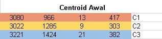

Data Mining menggunakan Clustering dengan Algoritma K-Means
Clustering
Clustering atau klasterisasi adalah metode pengelompokan data. Menurut Tan, 2006 clustering adalah sebuah proses untuk mengelompokkan data ke dalam beberapa cluster atau kelompok sehingga data dalam satu cluster memiliki tingkat kemiripan yang maksimum dan data antar cluster memiliki kemiripan yang minimum.
Clustering merupakan metode segmentasi data yang sangat berguna dalam prediksi dan analisa masalah bisnis tertentu. Misalnya segmentasi pasar, marketing dan pemetaan zonasi wilayah.
Algoritma K-Means
K-Means merupakan salah satu metode clustering non hirarki yang berusaha mempartisi data yang ada ke dalam bentuk satu atau lebih cluster.
Dalam metode K-Means data-data yang memiliki karakteristik yang sama diklaster dalam satu kelompok dan data yang memiliki karakteristik yang berbeda dikelompokkan dengan kelompok lain yang sesuai dengan karakteristik tersebut.
Teori Manual
Rumus perhitungan jarak menggunakan Rumus Euclidean Distance

keterangan :
d(x,y) = jarak objek antara objek x dan y
n = dimensi data
xi = nilai kolom
yi =
Tahapan Algoritma K-Means
Langkah 1 – Menentukan secara acak K titik data sebagai pusat cluster yang disebut centroid.
Langkah 2 – Menandai masing masing 𝑥_𝑖 masuk ke ke cluster tertentu, dengan cara menghitung jarak 𝑥_𝑖 ke masing masing pusat cluster (centroid) dan memasukkan 𝑥_𝑖 anggota pusat cluster tertentu tersebut jika memiliki jarak terdekat.
Langkah 3 – Menentukan pusat cluster baru dengan menghitungya rata rata dari anggota cluster
Langkah 4 – Ulangai langkah 2 dan 3 sampai tidak tidak ada dari anggota setiap cluster berubah tempat kelompoknya
Implementasi
Dimisalkan kita memiliki sampel data wine quality. Dalam tabel berikut ada 15 buah data yang akan kita kelompokkan menjadi 3 cluster. Kita sebut saja C1, C2 dan C3. Kita menghitungnya menggunakan Excel.

Pertama kita tentukan centorid nya. disini centoid diambil dari data ke -3, data ke-10 dan data ke-14

Kemudian kita hitung Iterasi pertama dari ke 15 data tersebut dengan centroid awal yang sudah ditentukan menggunakan rumus Euclidean Distance sehingga menghasilkan data dibawah ini. Kemuadian kita tentukan data minimalnya, setelah itu kita kelompokkan data sesuai pada cluster nya menurut perhitungan angka yang terkecil.

Setelah data yang telah dihitung sudah terklompokkan sesuai cluster nya, kita cari rata-rata nya.


Kemudian kita lakukan Iterasi kedua menggunakan centroid baru dari rata-rata kelompok cluster yang sudah dihitung sebelumnya

Setelah kita menghitung Iterasi kedua dan cluster nya tidak berubah, maka Iterasi dihentikan.
Jadi jika perhitungan pada Iterasi pertama dan Iterasi kedua sama, berarti data yang telah dihitung sudah terkelompokkan pada cluster yang benar.
Refrensi:
- Agusta, Y. 2007. K-means - Penerapan, Permasalahan dan Metode Terkait. Jurnal Sistem dan Informatika Vol. 3 (Februari 2007): 47-60.
- Dalam jurnal SNTIKI, vol (5), Hal 395-398, oleh Nengsih W, Febiyanto pada tahun 2012 dengan judul “Data Mining Analysis Pengelompokan Penerima Beasiswa Menggunakan Teknik Clustering K-Means.
- https://id.wikipedia.org/wiki/K-means
- https://www.codepolitan.com/5-library-python-untuk-data-science-59b774b6cad97